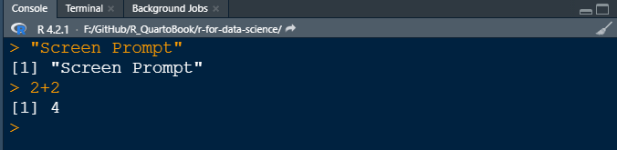
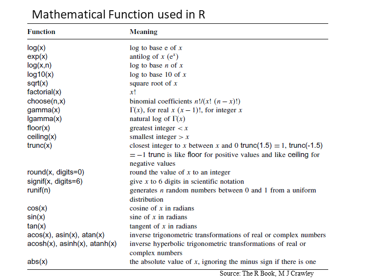
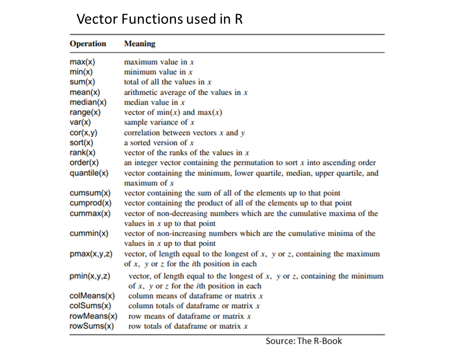

2+2[1] 4R is an object-oriented programming language like Python, Julia, and JavaScript. Like these programming languages, R has a specific syntax or function, which is essential to understand if you want to use its features to accomplish thousands of things with R. However, one of the most challenging parts of learning R is finding your way around. In section of tutorial you will learn some basic of R such as syntax of R programming, assignment statements, r-data types, control statements and simple r-function.
The screen prompt > in R-console is an place to put command or instruction for R to work. Press the “Ctrl” + “L” keys simultaneously. The screen will now be refreshed and the console should be cleared.

We can use R as a calculators, at the prompt, we enter the expression that we want evaluated and when we hit enter, it will compute the result for us . For Example:
For addition:
And for subtraction:
For multiplication:
For raised to the power:
Use parentheses to ensure that it understands what you are trying to compute.
https://www.geeksforgeeks.org/control-statements-in-r-programming/?ref=lbp
Variables, Comments, and Keywords are the three main components in R- programming. Variables are used to store the data, Comments are used to improve code readability, and Keywords are reserved words that hold a specific meaning to the compiler.
There are so many built-in mathematical functions are available in base-R. Some are shown in below table:

Here below some examples of R built-in R-functions
We can use very big numbers or very small numbers in R using the following scheme:
Suppose we want to know the integer part of a division: say, how many 13s are there in 119:
Suppose we wanted to know the remainder (what is left over when 119 is divided by 13: in maths this is known as modulo
Several types of rounding (rounding up, rounding down, rounding to the nearest integer) can be done easily with R.
The ‘greatest integer less than’ function is floor()
The ‘next integer’ function is ceiling()
Just like in algebra, we often want to store a computation under some variable name. The result is assigned to a variable with the symbols = or <- which is formed by the “less than” symbol followed immediately by a hyphen.
When you want to know what is in a variable simply ask by typing the variable name.
We can store a computation of two variable names and do some calculation and the result is assigned to a new variable
Do not begin a variable name with a period or a number. Variable names are case (upper/lower) sensitive.
Variable names in R are case-sensitive so x is not the same as X.
Variable names should not begin with numbers (e.g. 1x) or symbols (e.g. %x).
Variable names should not contain blank spaces: use grain.yield
R has a wide variety of data types including scalars, vectors (numerical, character, logical), matrices, data frames, and lists.
Vectors is data-type with one or more values of the same type such as logical, integer, real, complex, string (or character) or raw vectors. Unlike Python, the indexing of the vector in R will start from ‘1’ and not from ‘0’.
A scalar data structure is the most basic data type that holds only a single atomic value at a time. Using scalars, more complex data types can be constructed. The most commonly used scalar types in R:
Numeric
Character or strings
Integer
Logical
Complex
Numeric is the default type used in R for mathematical computations. Examples of numeric are decimal numbers and whole numbers.
Character objects are strings. They could be any sequence of characters including alphabets, numbers, punctuation marks, etc. enclosed in quotes.
[1] "character"[1] "Chemistry , University at Buffalo"Logical values are boolean values of TRUE or FALSE. Note that R needs logical values of TRUE or FALSE to be in upper case. If you use mixed case or lowercase, you’ll get an error or unpredictable results.
A list of numbers or charterers together to form a Multiple Elements Vector. Values can be assigned to vectors in many different ways. We can create a vector of number from 1 to 10, using the concatenation function c
It can be generated by the sequence of integer values 1 to 10 using : (colon), the sequence-generating operator,
We can also create a vector using Using sequence (Seq.) operator.
[1] 5.0 5.4 5.8 6.2 6.6 7.0 7.4 7.8 8.2 8.6 9.0R has ability to evaluate functions over entire vectors, so no need to write , for loops and subscripts. Important vector functions are listed in below Table:

Once we have a vector of numbers we can apply certain built-in functions to them to get useful summaries. For example:
[1] 55[1] 10[1] 5.5[1] 9.166667[1] 3.02765[1] 10[1] 1[1] 5.5Summary() function will calculate summary statistics of a vector
Two vectors of same length can be added, subtracted, multiplied or divided giving the result as a vector output.
Matrices is a two-dimensional rectangular layout of number in rows and columns. All columns in a matrix must have the same mode (numeric, character, etc.) and the same length.
All columns in a matrix must have the same mode (numeric, character, etc.) and the same length. There are several ways of making a matrix. Suppose you were interested in the matrix of 2 x 3. You could form the two rows (vectors) and then bind (rbind) them together to form the matrix:
[,1] [,2] [,3]
r1 6 2 10
r2 1 3 -2[1] "matrix" "array" We can bind them (cbind) the same vectors into columns of a matrix
A Matrix cab be created using the matrix() function from the given set of values. The basic function of a matrix is:
matrix(data, nrow, ncol, byrow, dimnames)
The values are:
data is the input vector which becomes the data elements of the matrix.
nrow is the number of rows to be created.
ncol is the number of columns to be created.
byrow is a logical clue. If TRUE then the input vector elements are arranged by row.
dimname is the names assigned to the rows and columns.
Warning in matrix(1:9, nrow = 4, ncol = 3, byrow = T): data length [9] is not a
sub-multiple or multiple of the number of rows [4] [,1] [,2] [,3]
[1,] 1 2 3
[2,] 4 5 6
[3,] 7 8 9
[4,] 1 2 3The class and attributes of X indicate that it is a matrix of four rows and three columns (these are its dim attributes)
We can create matrix with row and column names:
# create a vector
cells=c(1,26,24,68,35,68,73,18,2,56,4,5,34,21,24,20) # create a vector
# names of column rows
cnames = c("C1","C2","C3","C4")
# names of two rows
rnames = c("R1","R2","R3","R4")
# matrix
Z= matrix(cells,nrow=4, ncol=4, byrow=TRUE,dimnames=list(rnames,cnames))
Z C1 C2 C3 C4
R1 1 26 24 68
R2 35 68 73 18
R3 2 56 4 5
R4 34 21 24 20Or, we can easily naming the rows and columns of matrices. Suppose we want to labels rows with Trial names, like Trial.1, Trial.2 etc.:
[,1] [,2] [,3]
Trial.1 1 2 3
Trial.2 4 5 6
Trial.3 7 8 9
Trial.4 1 2 3For column names, we will create a vector of different names for the three most commonly used drugs used in the trial, and use this to specify the colnames(X):
Aspirin Acetaminophen Ibuprofen
Trial.1 1 2 3
Trial.2 4 5 6
Trial.3 7 8 9
Trial.4 1 2 3We can access elements of a matrix using the square bracket [] indexing method. Elements can be accessed as var[row, column]. Here rows and columns are vectors.
Trial.1 Trial.2 Trial.3 Trial.4
2 5 8 2 Aspirin Acetaminophen Ibuprofen
7 8 9 Acetaminophen Ibuprofen
Trial.1 2 3
Trial.2 5 6
Trial.3 8 9
Trial.4 2 3 Aspirin Acetaminophen
Trial.2 4 5
Trial.3 7 8
Trial.4 1 2We can use summary() function to get row and column wise summary statistics of a matrix
Aspirin Acetaminophen Ibuprofen
Min. :1.00 Min. :2.00 Min. :3.00
1st Qu.:1.00 1st Qu.:2.00 1st Qu.:3.00
Median :2.50 Median :3.50 Median :4.50
Mean :3.25 Mean :4.25 Mean :5.25
3rd Qu.:4.75 3rd Qu.:5.75 3rd Qu.:6.75
Max. :7.00 Max. :8.00 Max. :9.00 Min. 1st Qu. Median Mean 3rd Qu. Max.
1.00 1.00 2.50 3.25 4.75 7.00 [1] 3.25Calculated over all the rows and the mean & variance of the bottom row (Trial.4)
There are some special functions for calculating summary statistics on matrices
Trial.1 Trial.2 Trial.3 Trial.4
6 15 24 6 Aspirin Acetaminophen Ibuprofen
13 17 21 Trial.1 Trial.2 Trial.3 Trial.4
2 5 8 2 Aspirin Acetaminophen Ibuprofen
3.25 4.25 5.25 We can also use apply() function to calculate row and column means. Here columns are margin no. 2 (rows are margin no. 1
Factors are data structures that are implemented to categorize the data or represent categorical data and store it on multiple levels.
In R, factor() function create or convert string-vectors to factors:
Arrays is data storage structures with fixed number of dimensions. An array in R can be created with the use of array() function.
, , 1
[,1] [,2] [,3]
[1,] 2 4 6
[2,] 3 5 7
, , 2
[,1] [,2] [,3]
[1,] 8 10 12
[2,] 9 11 13Vectors of different lengths can also be fed as input into the array() function
List is a one-detrimental data element which consist of several objects in a order. The object in a list may be mixed data types or different data types.The list can be a list of vectors, a list of matrices, a list of characters and a list of functions, and so on.
list in R is created with the use of list() function.
[[1]]
[[1]]$Location
[1] "NY"
[[1]]$Year
[1] 2021
[[1]]$LabExp
Aspirin Acetaminophen Ibuprofen
Trial.1 1 2 3
Trial.2 4 5 6
Trial.3 7 8 9
Trial.4 1 2 3Components of a list can be accessed in similar fashion like matrix or data frame:
In R, tabular data are stored as Data Frame which is made up of three principal components, the data, rows, and columns. It is more general than a matrix, in that different columns can have different modes (numeric, character, factor, etc.).
To create a data frame in R use data.frame() command and then pass each of the vectors you have created as arguments to the function
ID = c(1,2,3,4) # create a vector of ID coloumn
Landcover = c("Grassland","Forest", "Arable", "Urban") # create a text vector
Settlement = c (FALSE, FALSE, FALSE, TRUE) # creates a logical vector
pH = c(6.6,4.5, 6.8, 7.5) # create a numerical vector
SOC = c (1.2, 3.4, 1.1, 0.12) # create a numerical vector
my.df=data.frame(ID,Landcover,Settlement, pH, SOC) # create a data frame
my.df ID Landcover Settlement pH SOC
1 1 Grassland FALSE 6.6 1.20
2 2 Forest FALSE 4.5 3.40
3 3 Arable FALSE 6.8 1.10
4 4 Urban TRUE 7.5 0.12we can see the detail of structure using str() function
'data.frame': 4 obs. of 5 variables:
$ ID : num 1 2 3 4
$ Landcover : chr "Grassland" "Forest" "Arable" "Urban"
$ Settlement: logi FALSE FALSE FALSE TRUE
$ pH : num 6.6 4.5 6.8 7.5
$ SOC : num 1.2 3.4 1.1 0.12 ID Landcover Settlement pH SOC
1 1 Grassland FALSE 6.6 1.20
2 2 Forest FALSE 4.5 3.40
3 3 Arable FALSE 6.8 1.10
4 4 Urban TRUE 7.5 0.12 Min. 1st Qu. Median Mean 3rd Qu. Max.
4.500 6.075 6.700 6.350 6.975 7.500 pH SOC
Min. :4.500 Min. :0.120
1st Qu.:6.075 1st Qu.:0.855
Median :6.700 Median :1.150
Mean :6.350 Mean :1.455
3rd Qu.:6.975 3rd Qu.:1.750
Max. :7.500 Max. :3.400 Components of data frame can be accessed like a list or like a matrix.
Control flow is the order in which a statement execute and control statements use to control the execution and flow of the program based on conditions provided in the statements.
The eight major types of control statements are follows:
if: statement for conditional programmingif..else: statement for conditional programmingfor: loop to iterate over a fixed number of iterationswhile: loop to iterate until a logical statement returns FALSErepeat: loop to execute until told to breakbreak/next:break/next arguments to exit and skip interations in a loopIf the expression is true, the statement gets executed. But if the expression is FALSE, nothing happens.
It is similar to if condition but when the test expression in if condition fails, then statements in else condition are executed.
The for loop is used to execute repetitive code statements for a particular number of time. It is useful to iterate over the elements of a list, dataframe, vector, matrix, or any other object.
[1] "The number is 10"
[1] "The number is 11"
[1] "The number is 12"
[1] "The number is 13"
[1] "The number is 14"
[1] "The number is 15"While loop executes the same code again and again until a stop condition is met
result <- 1
i <- 1
# test expression
while (i < 5) {
print(result)
# update expression
i = i + 1
result = result + 1
}[1] 1
[1] 2
[1] 3
[1] 4Following example show the while statement with break
A repeat loop is used to iterate over a block of code multiple number of times.
Writing custom functions is an important part of programming in R.
To create a new R function we need to think about 4 major things:
the name of the function
the arguments (inputs) the function will take
the code the function will run
the output the function will return for the user
To create a function, use the function() keyword:
# create a function with the name my_function
my_function <- function() {
print("Hello World!")
}
# call the function
my_function()[1] "Hello World!"Arguments are specified after the function name, inside the parentheses. The following example has a function (full_name) with one arguments (last_name). When the function is called, we pass along a first name, which is used inside the function to print the full name:
To return the results of a function, use the return() function:
We can create a simple equation with two arguments (x, y):
We can Call a function within another function:
The output above function is therefore (2+4) + (3+3) = 12.
We can also write a function within a function:
Returning Multiple Outputs from a Function:
results_all <- function(x, y) {
results1 <- 2*x + y
results2 <- x + 2*y
results3 <- 2*x + 2*y
results4 <- x/y
c(results1, results2, results3, results4)
}
results_all(1, 2)[1] 4.0 5.0 6.0 0.5Following function shows an example to convert temperature from Celsius (C) to Fahrenheit (F):
The apply family consists of vectorized functions which minimize our need to explicitly create loops. These family is an inbuilt R package, so no need to install any packages for the execution.
apply() for matrices and data frames
lapply() for lists…output as list
sapply() for lists…output simplified
tapply() for vectors
mapply() for multi-variant
apply() returns a vector or array or list of values obtained by applying a function to margins of an array or matrix or dataframe. Using apply() is not faster than using a loop function, but it is highly compact and can be written in one line.
apply(x,MARGIN, FUN,…)
Where:
x is the matrix, dataframe or array
MARGIN is a vector giving the subscripts which the function will be applied over. E.g., for a matrix 1 indicates rows, 2 indicates columns, c(1, 2) indicates rows and columns.
FUN is the function to be applied
… is for any other arguments to be passed to the function
Let’s calculate column mean:
Row mean:
Get column quantile:
lapply() returns a list of the same length as X (list), each element of which is the result of applying FUN to the corresponding element of X. It loops over a list, iterating over each element in that list and then applies a function to each element of the list and finally returns a list (l stand for list).
lapply(x, FUN, …)
Where:
x is the list
FUN is the function to be applied
… is for any other arguments to be passed to the function
# Create a list
mylist<-list(A=matrix(1:9,nrow=3),B=1:5,C=c(8,5), logic = c(TRUE,FALSE,FALSE,TRUE, TRUE))
mylist$A
[,1] [,2] [,3]
[1,] 1 4 7
[2,] 2 5 8
[3,] 3 6 9
$B
[1] 1 2 3 4 5
$C
[1] 8 5
$logic
[1] TRUE FALSE FALSE TRUE TRUEYou can see how the results are saved as a list form. We can easily unlist the results:
sapply() is a wrapper of lapply() to simplify the result to vector or matrix.
tapply() is used to apply a function over subsets of a vector when a dataset can be broken up into groups (via categorical variables - aka factors)
ID Landcover Settlement pH SOC
1 1 Grassland FALSE 6.6 1.20
2 2 Forest FALSE 4.5 3.40
3 3 Arable FALSE 6.8 1.10
4 4 Urban TRUE 7.5 0.12We can use tapply() to calculate mean values of pH an SOC for land cover
mapply() is a multivariate version of sapply(). mapply() applies FUN to the first elements of each … argument, the second elements, the third elements, and so on.
You can see that the same function (rep) is being called repeatedly where the first argument (number vector) varies from 2 to 4, and the second argument (rep) varies from 4 to 2. Instead, you can use mapply()